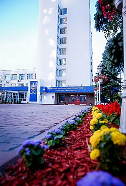
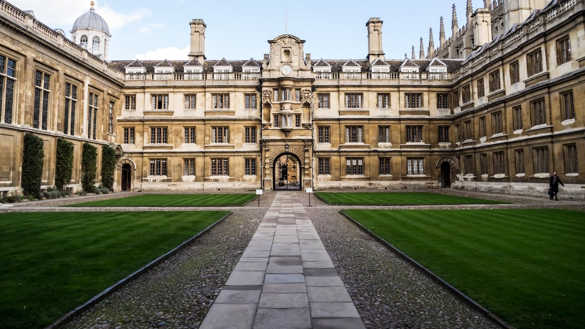
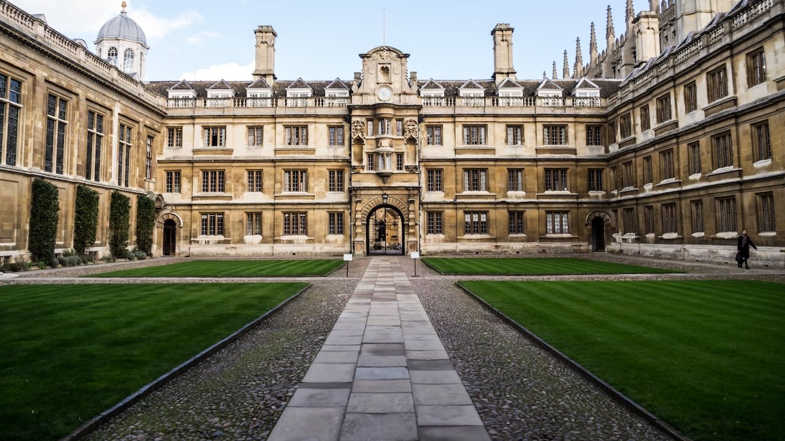

Веб-дезайнер

Киевский национальный университет культуры и искусств (КНУКиИ)
Киевский национальный университет культуры и искусств
Статус: Государственный
Адрес: 01133, г. Киев, ул. Щорса, 36
Киев
Телефон приемной комиссии: (044) 285-44-03, (044) 285-43-86
Квалификационный уровень: бакалавр, магистр
Требавание знать баналные языки програмирования(html,java,cc и другие)
 Киевский национальный университет технологий и дизайна
Статус: Государственный
Адрес: 01011, г. Киев, ул. Немировича-Данченко, 2
Киев
Телефон приемной комиссии: (044) 256-29-75
Стоимость обучения в год (грн.): от 8100 до 25000
Квалификационный уровень: бакалавр, магистр
Киевский национальный университет технологий и дизайна
Статус: Государственный
Адрес: 01011, г. Киев, ул. Немировича-Данченко, 2
Киев
Телефон приемной комиссии: (044) 256-29-75
Стоимость обучения в год (грн.): от 8100 до 25000
Квалификационный уровень: бакалавр, магистр
 Университет экономики и права "КРОК" город Киев
Стоимость обучения в год (грн.): от 7000 до 25000
Квалификационный уровень: младший специалист, бакалавр, магистр
Кількість балів ЗНО не меньш ніж 140 балів

University of Cambridge
Стоимость обучения в год £25,300
Город Кембридж
Знание англиского,полное средние образавание,зно по англискому 170-180 балів,ВНО 170-180
Университет экономики и права "КРОК" город Киев
Стоимость обучения в год (грн.): от 7000 до 25000
Квалификационный уровень: младший специалист, бакалавр, магистр
Кількість балів ЗНО не меньш ніж 140 балів

University of Cambridge
Стоимость обучения в год £25,300
Город Кембридж
Знание англиского,полное средние образавание,зно по англискому 170-180 балів,ВНО 170-180
.jpg) Imperial College London
Город London
Стоимость обучения в год £27,750
Знание англиского,требование візи,мед карти та інші документи,заявка в електроному виді,зно англиска 170-180балів,ВНО 170-180
Imperial College London
Город London
Стоимость обучения в год £27,750
Знание англиского,требование візи,мед карти та інші документи,заявка в електроному виді,зно англиска 170-180балів,ВНО 170-180